Talks and posters
Conference posters and talk decks from 2025 and 2026, and the talks and posters from my ORNL internship.
Posters
Conference posters, 2025–2026. Each one opens as a PDF.
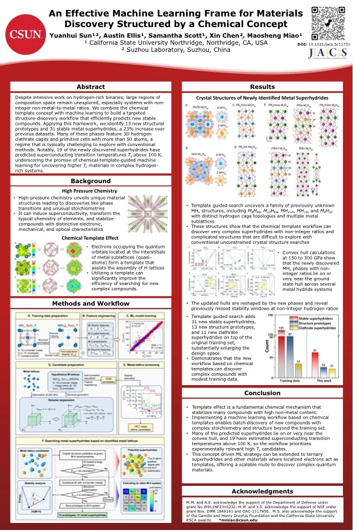
ML batched superhydrides
Template-guided machine learning for discovering stable complex metal superhydrides and prioritizing promising high-pressure superconducting candidates.
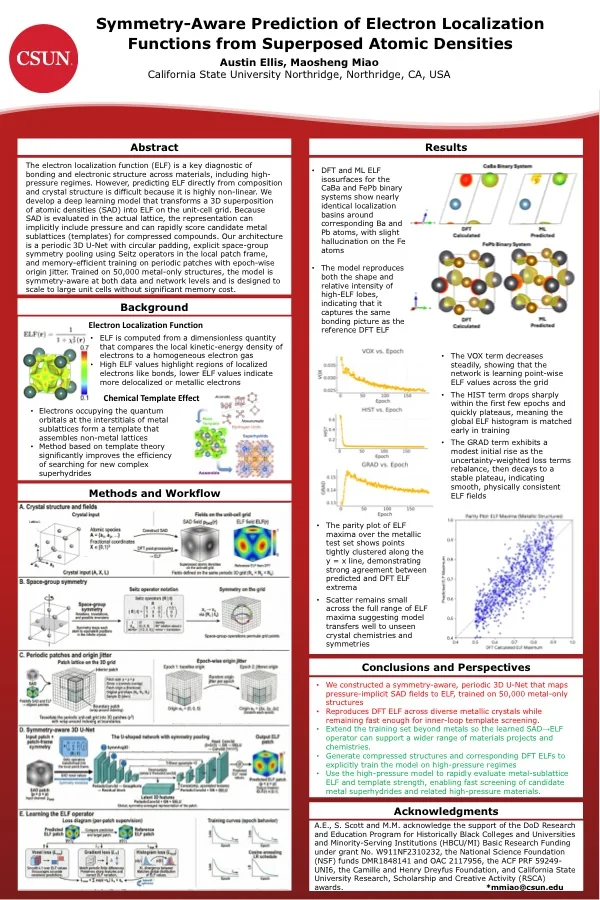
Symmetry-aware ELF 3D-CNN
A periodic, symmetry-aware deep-learning model that predicts electron localization functions from superposed atomic densities for fast electronic-structure screening.
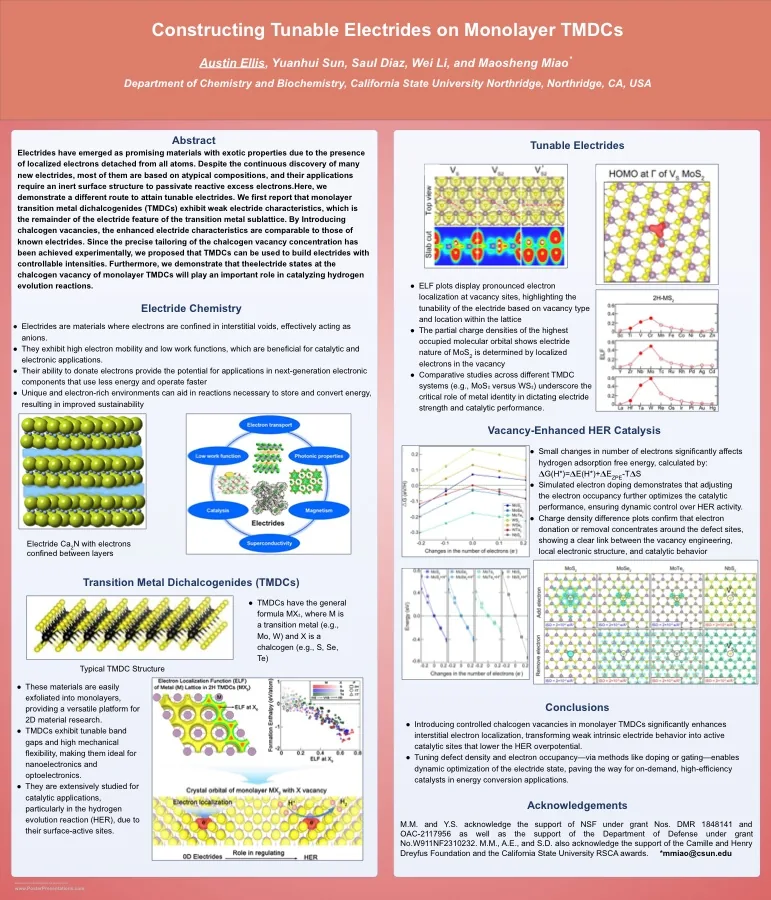
Tunable electrides in monolayer TMDCs
Vacancy-controlled electride behavior in 2D transition-metal dichalcogenides and the impact of localized interstitial electrons on catalytic hydrogen-evolution trends.
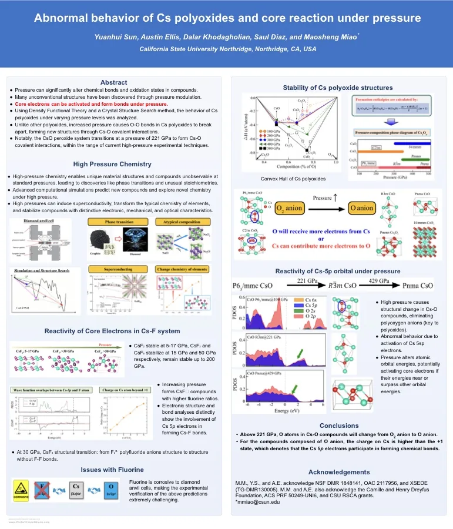
Cs polyoxides and core reactivity under pressure
First-principles structure-search results showing pressure-induced breakdown of polyoxygen motifs in Cs-O compounds and activation of Cs core-level electrons in high-pressure bonding.
Slides
Talks and seminar decks, 2025–2026.
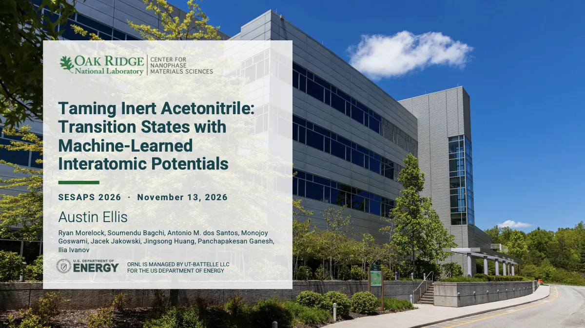
SESAPS 2026
Talk on my ORNL work, Taming Inert Acetonitrile: Transition States with Machine-Learned Interatomic Potentials. It covers the polymerization pathway under pressure, the route through the triazine in methanol, and the aminopyrimidine on Li, Na and K.
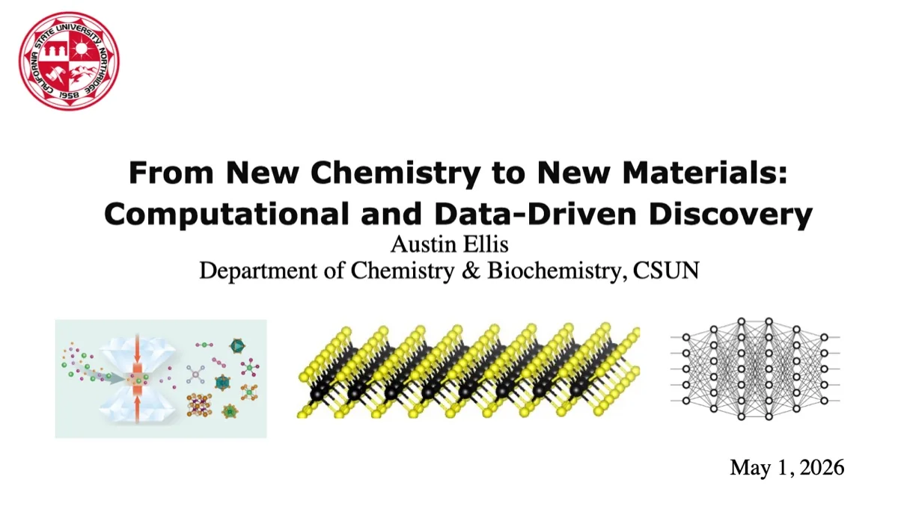
M.S. thesis defense
Thesis defense deck for From New Chemistry to New Materials: Computational and Data-Driven Discovery, connecting quasi-atom chemistry, 2D electrides, high-pressure superhydrides, and ML-accelerated materials discovery.
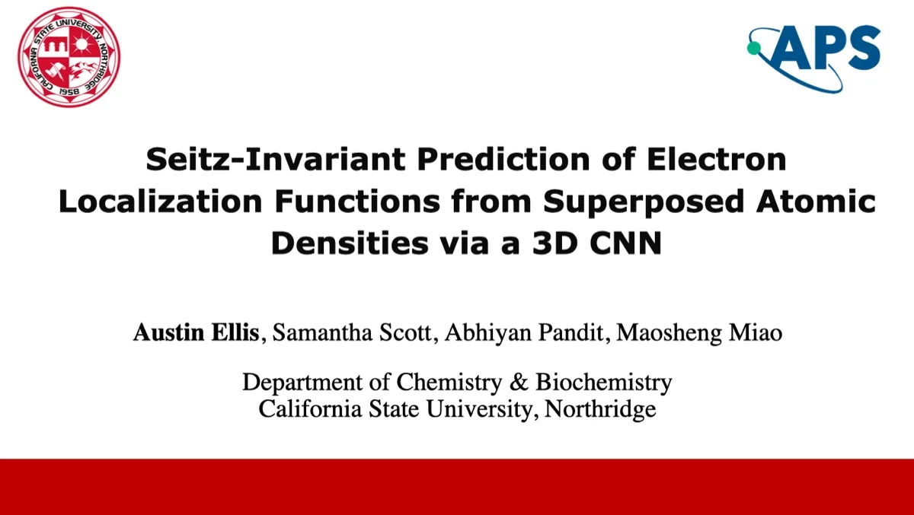
APS Global Physics Summit 2026
APS Denver talk on Seitz-invariant prediction of electron localization functions from superposed atomic densities using a 3D CNN.
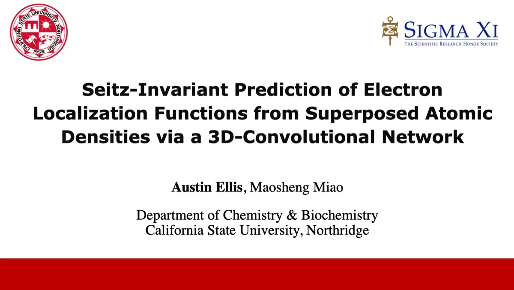
Sigma Xi 2025 presentation
Research presentation on symmetry-aware electron-localization prediction and machine-learning-guided materials discovery workflows.
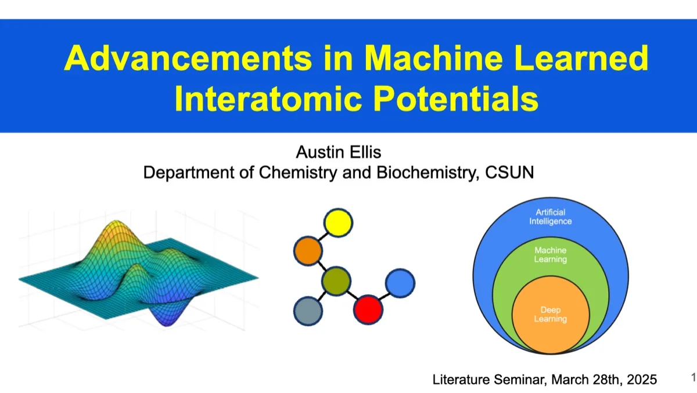
Department literature review seminar 2025
Literature review seminar covering recent computational and machine-learning advances relevant to electronic-structure modeling in materials chemistry.
At Oak Ridge
Talks and posters from my ORNL internship, 2026. The posters open as PDFs and the talks open in PowerPoint’s web viewer.
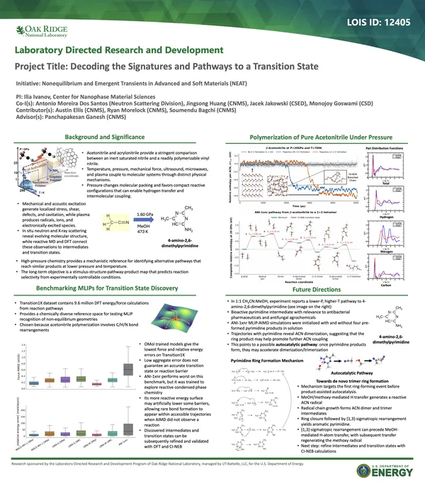
Decoding the signatures and pathways to a transition state
Project poster for the LDRD project led by Ilia Ivanov, with our MLIP benchmark on Transition1x, the polymerization of acetonitrile at 20 GPa, and the proposed route to the aminopyrimidine in methanol.
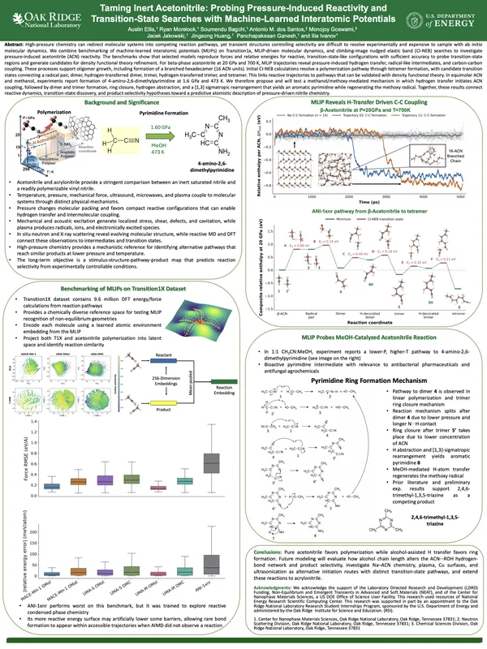
Pressure-induced reactivity and transition-state searches
MLIP benchmarks on Transition1x, hydrogen transfer and C–C coupling in β-acetonitrile at 20 GPa and 700 K, a CI-NEB pathway to the tetramer, and a proposed methanol-mediated route to the aminopyrimidine.
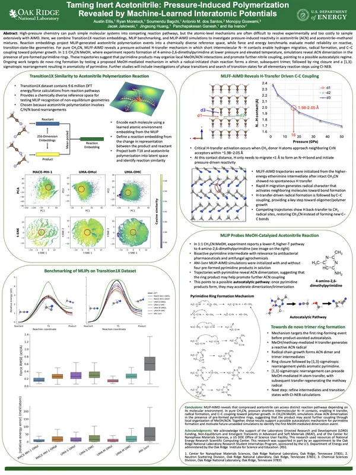
Pressure-induced polymerization of acetonitrile
My first ORNL poster, with reaction embeddings and MLIP benchmarks on Transition1x, hydrogen transfer and C–C coupling in compressed acetonitrile, and acetonitrile–methanol simulations seeded with pyrimidine.
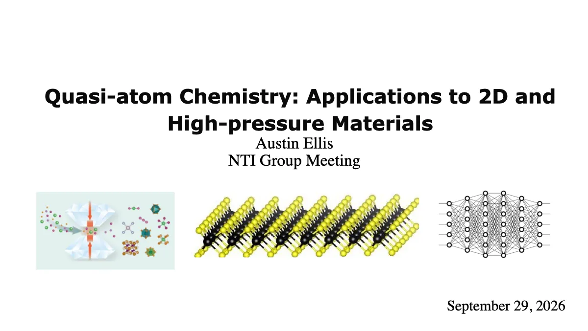
Quasi-atom chemistry
Invited talk on quasi-atom chemistry and its applications to 2D electrides, high-pressure superconductivity, and machine-learning-assisted superhydride discovery.
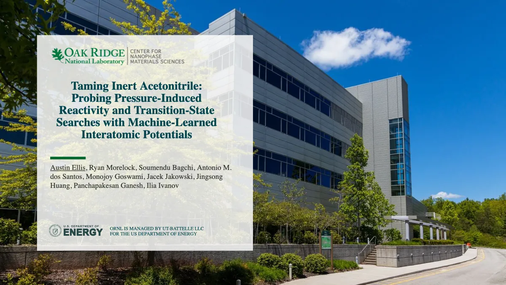
Pressure-induced reactivity and transition-state searches
Talk on benchmarking machine-learned interatomic potentials for transition states and on the reactions of compressed acetonitrile found with them.
| Date | Kind | Where |
|---|---|---|
| Oct 2026 | Poster | NEAT Science Symposium |
| Sep 2026 | Invited talk | NTI group meeting, CNMS |
| Aug 2026 | Talk | Neutron Scattering Division |
| Aug 2026 | Poster | CNMS User Meeting |
| Jul 2026 | Poster | NEAT initiative |